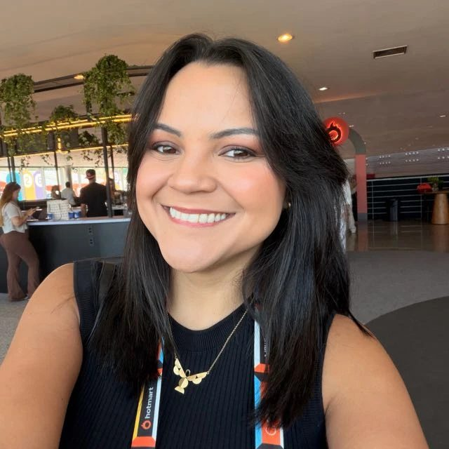

AGENDA DE NEGÓCIOS
As conversas certas.
Reuniões prospectadas a partir dos seus objetivos, com contexto para chegar preparado.
Missão PDAC 2027 · Toronto, Canadá
Sua empresa no centro da mineração mundial. Com estratégia antes da viagem, uma agenda com propósito e quem conhece o caminho.

Com Ramon e Flávia.
Mais de uma década de PDAC.
Quatro dias.
Um mundo de oportunidades.
O mundo mineral
passa por aqui.
Dados da edição de 2026. Fonte PDAC ↗
Por dentro da missão
Reuniões, pavilhões e encontros paralelos. Cada parte da experiência começa com uma pergunta. O que faz sentido para o seu negócio?
Reuniões prospectadas a partir dos seus objetivos, com contexto para chegar preparado.

Um roteiro pelos pavilhões, empresas e soluções relevantes para a sua atuação.

Eventos paralelos, networking e presença no Canadá para os próximos passos.
Seu momento. Seu objetivo.
O PDAC reúne pessoas com ambições diferentes. A preparação da Next parte do seu perfil para encontrar as conexões que importam.
Aproximar projetos, capital e parceiros técnicos, com uma agenda alinhada ao estágio da sua operação.
Quem está por trás
Ramon Dias e Flávia Saleme vivem no Canadá e frequentam o PDAC há mais de uma década. São eles que planejam sua missão e acompanham sua presença em Toronto.
“Ir ao PDAC sem conhecer o ambiente é entrar numa sala de negociação sem pauta.”

Como funciona
A viagem é uma etapa. A missão começa na preparação e ganha continuidade no relacionamento.
Entendemos seu objetivo, prospectamos contatos e estruturamos a agenda. Orientação de viagem, briefing e credenciamento entram no planejamento.
Você participa do evento com roteiro, contexto e acompanhamento. A curadoria inclui pavilhões e os encontros paralelos relevantes para a missão.
Organizamos o que vem depois de cada conversa e acompanhamos os contatos no Canadá, de acordo com o formato contratado.
Encontre seu formato
Cada nível inclui o anterior. O investimento é definido a partir do escopo, do objetivo e do tamanho do grupo.
Para chegar preparado
Orientação para aproveitar o evento com mais confiança e uma visão clara do que explorar.
Para desenvolver negócios
Uma agenda prospectada com base na sua empresa e no que você busca construir no PDAC.
Para ampliar sua presença
Um formato para delegações e instituições que buscam uma atuação mais abrangente no Canadá.
| Na sua missão | Essencial | Agenda de Negócios | Missão Executiva |
|---|---|---|---|
| Preparação e roteiro do evento | Incluído | Incluído | Incluído |
| Diagnóstico e reuniões prospectadas | — | Incluído | Incluído |
| Acompanhamento diário | — | Incluído | Incluído |
| Visita técnica e equipe bilíngue | — | — | Incluído |
| Marketing, evento privado e continuidade | — | — | Incluído |
O escopo detalhado é confirmado na proposta. Passagens, hospedagem, documentação e credenciamento devem ter suas condições verificadas com a Next.
Reuniões depois do evento e relacionamento continuado no Canadá. Converse com a Next sobre as possibilidades.
Monte sua missão
Conte seu perfil e o que você procura. Ao final, sua mensagem chega preparada para a conversa no WhatsApp.
Antes de embarcar
O planejamento começa com clareza. Se faltar alguma resposta, converse com a gente.
Falar com a NextÉ uma convenção internacional de exploração mineral e mineração. A edição de 2027 acontece de 7 a 10 de março, em Toronto, no Metro Toronto Convention Centre.
Sim. A Next prepara missões para profissionais, empresas, investidores e delegações institucionais. O planejamento considera o tamanho do grupo e os objetivos de cada agenda.
A preparação inclui orientação sobre viagem e participação no evento. As condições de contratação, emissão e pagamento de passagem, hospedagem e credenciamento são detalhadas na proposta da Next.
Conte sua necessidade de idioma no briefing. A Next atua localmente no Canadá e a Missão Executiva prevê equipe bilíngue. O apoio específico é alinhado de acordo com o formato contratado.
A orientação documental faz parte da preparação. As exigências dependem do perfil e da documentação de cada participante, por isso vale conversar com a Next antes de emitir a viagem.
O investimento é sob consulta, conforme o escopo e o número de participantes. Começar com antecedência ajuda na preparação documental, na logística e na prospecção das reuniões.
A Next pode acompanhar os próximos passos no Canadá conforme o escopo contratado. Há também a possibilidade de uma Agenda Pós-PDAC, com reuniões e relacionamento depois do evento.
Missão PDAC 2027
Vamos descobrir onde a sua empresa quer chegar.
Comece sua missão 7 a 10 de março · Toronto, Canadá